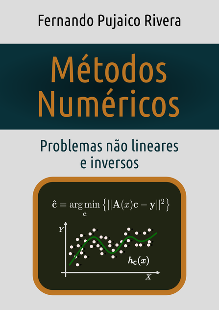
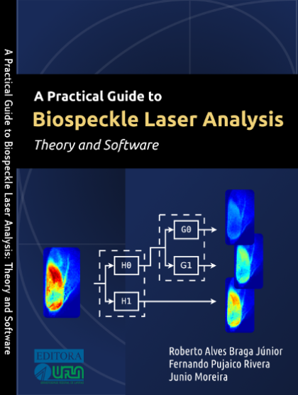

https://orcid.org/0000-0002-4970-2818
Home
|
Livros
|
Repositorios
|
Programas
|
Blog
|
Email
Ciências e Tecnologia:

Métodos numéricos: Problemas não lineares e inversos
Este livro é uma coletânea de procedimentos relativos à solução de alguns problemas não lineares e inversos que têm aparecido, de forma muito recorrente, na minha vida profissional.

A practical guide to biospeckle laser analysis: theory and software
Libro sobre la biblioteca BSLTL para el procesamiento de imágenes digitales de speckle laser. La biblioteca está escrita usando el lenguaje m usado en OCTAVE y MATLAB.
Ingenharias, ciência e tecnologia 4 (Capítulo)
Participación con un artículo en el capítulo 27 titulado: Utilização da técnica de velocimetria por imagens de partículas (piv) para o estudo do módulo de elasticidade de painéis de madeira compensada.
Literatura Infantil:
Aulicha: crônicas nos Andes
Nesta obra o leitor conhecerá um conjunto de histórias acontecidas na Cordilheira dos Andes do Peru. Elas mostram algumas vivências do meu pai, Aurelio (1956), quando era apenas uma criança.
Contato
E-mail pessoal
Redes sociais
Diaspora de Trucomanx
X de Trucomanx
RSS
RSS do blog de Trucomanx
 https://orcid.org/0000-0002-4970-2818
https://orcid.org/0000-0002-4970-2818